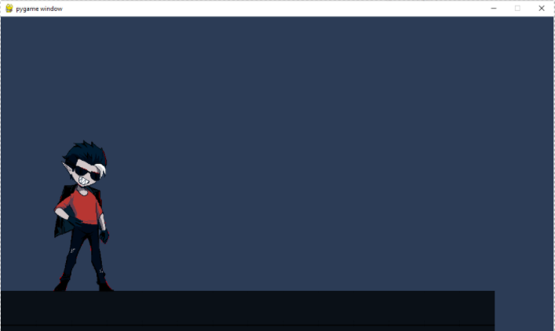

Project Idea

PROJECT DESCRIPTION
Overview
The Motel is a puzzle based pixelated 2D side scrolling horror game where the players are required to find hints and keys in order to escape from a haunted motel filled with ghastly ‘guests’ which roam within it. Each ‘guest’ has their own unique ability, and players will have to find ways to escape from them while attempting to solve puzzles.
Motivation
The Motel – is an idea formulated by a fellow group member, where she had suggested that we should create a horror game. A horror game to us is a fun and quirky idea because of how spooky it is. Having liked the idea and the aspect of designing a game, we were all on board for the project. As we all took a programming course and only know the python language, we wanted to take up the challenge of coding on python by using a foreign program (pygame) to create the game. Furthermore, some of us have used python to create a game and or coded a simple project with it. An addition to why we have chosen to do a game is that it is also easy to delegate between the four of us and we can split up some of the coding to complete the game.
Description
The Motel within the gaming industry would not be considered a niche game, as many has done similar games like it. The market for The Motel depends on how well the game conveys its story, since these kinds of game usually depend on its narratives more than its gameplay. The Little Nightmares series is an example of it. The general story we have is that a couple, who was in a car in the middle of nowhere after getting lost, arrived at a mysterious motel which had appeared within the darkness of the night. They went in, only to find no one in the reception. With their car tire punctured mysteriously when they return to it, they had no choice but to stay and find materials to fix the car in the meantime from the motel. That is when the player is caught and thrown into the first floor, forced to find their way back to reunite with their partner.
Tools + Tech
The puzzles on each floor will be different, ranging from math questions to abstract puzzles. While they interact with items and walk-through floors, the enemy, or the ‘guest’, will be roaming around as well, chasing the player the moment they see them. Players will be given a game over if they are caught. To avoid this, players can either hide behind structures within the floor, distract the guests, or find ways to temporarily ward them off. The temporary goal of the game is to unlock floors. Ultimately, the player is attempting to escape from the motel.
The enemies we’ve came up with ranges from many different types, most inspired by other horror games of similar kind. We have a guest that only appear within fake paintings, which players would have to detect themselves. The level requires the players to find a way to ward off the guest, and destroy the fake paintings the guest was in. There is also a guest with their body parts separated into five (head and limbs), all within different rooms of the floor. The player is required to find their parts and figure out what part needs to be destroyed through finding hints of the guest’s past, while avoiding the main part, the head, from killing them.
Skills, Outcome items
The Motel will be made using pygame, a program designed to code and create games. The program is known for making 2D based game, and it only requires users to know python, making it a friendly program for beginner coders that wants merely learn about programming rules and practices. What we expect to obtain from making this game is the understanding of python and programming rules. By understanding these, we will be able to understand other languages not limited to python easier, thus, is beneficial to us since python is not in high demand within the market as shown by the burning glass data. Furthermore, It also helps with improving our problem-solving skills, an essential skill for programming anything in general.
DETAILED DESCRIPTION
As mentioned above, we have decided that instead of just a regular horror game, we want it to be to a much more wacky, spooky themed, logic-based game where the players will have to play the role of devil prosecutor, here to retrieve wandering souls at a motel who were convinced that they don’t deserve to be sent to hell. For the prosecutor to ‘arrest’ them, they will have to present evidence for their sins, which can be found around the rooms of the specific floor that ghost is wandering in. The primary aim that will be achieved in this project is to create a shell, or a much simpler and smaller prototype of the game that is playable. It will be playable for three to ten minutes, where the players will be able to move around, look for clues, and argue with one of the ghosts. The graphics will be simple, but enough to show how the game atmosphere will be.
Milestones
The milestones, or goals we shall achieve is as listed:
1. Create concept art of the game. Multiple concept art will be needed, but these concept arts will be limited to only focusing on the room we plan to implement. This goal is necessary to ensure that we know how the game will feel to create the interface.
------a. Draw concept art for the protagonist.
------b. Draw concept art for maps.
------c. Draw concept art for ghosts.
------d. Draw how the game will look overall.
2. Understand how to use Pygames, and proceed to create the prototype itself. This part is necessary for creating the envisioned prototype.
------a. Allow the character to be able to run, jump and crouch.
------b. Allow the characters to interact.
------c.Create an inventory storage.
------d. Create multiple branches for different choices.
------e. Make it possible for characters to express differently (sprite animations and still image expressions).
------f. Create interfaces. (Menu, inventory, start screen, etc.)
3. Find someone to test to game out for us. Ensure that the game working and presented as intended.
------a. Find someone to test to game out for us. Ensure that the game working and presented as intended.
------b. Find a time to interview and test them with the prototype.
What our project will do:
Our project aims to create a wacky horror Pygame, featuring the main protagonist who from the devil’s realm, being the lazy subject of Satan, had lost his powers and was sent to a haunted motel where the user is faced with wandering souls that they must retrieve and send them back to hell. Each room of the motel features a character with their corresponding story. The user’s job being trying to convince the game that they do not deserve being sent to the devil realm.
What we will complete the project:
Originally, we had aimed to create the game using Pygames where we would code the shell of the game and implement the small stages inside. Seeing as this was difficult and unachievable for some, we have now switched to paper prototyping via Figma where the team is actively collaborating on a document with the prototype
Prologue/story of the project :
At the very beginning, due to how busy we were with other assignments, as well as some personal life issues of some of our members, we did not know how we were going to proceed with the project. To take things into matters, one of our members, Zhi Wei, started on the prototype of the game by themselves, making a simple shell for it. She watched video basics about pygames and wrote the code for it. Basic tiles and some sprites were made as well. This was how it looked like:
The only possible user input at the time were just movement keys up down and left right with a still sprite. Although it looked little, there were already many things written as it’s written from scratch. Writing it may take little time but understanding how the code works was a different story. Zhi Wei had thought that because she has a lot of free time on her hands that she would be able to finish as least a visually appealing prototype of it. But with the time it takes to understand one piece of code however, she realized that although the time it takes may work out for her; it does not mean that it would work out for other teammates who probably do not have the same amount of free time as she has. She then waited for the meeting to discuss about what they can do with the prototype if it was not possible to be completed in the end.
Through meeting with teammates, it was then decided that a paper prototype would be more efficient in a manner where we would be able to present all components of the game we have devised as opposed to a rushed coded game. Some of the team members who are not so confident in coding felt that this would be more practical, and, in this way, everyone would be able to participate in making the paper prototype as it is a simple task. Time was the biggest limitation as we thought that we are not able to complete the code in time and thus have switched to paper prototyping with Figma as this is software, we are familiar with from our other courses.
Main Limitations:
Going into a little detail of the main limitations we endured for this project include some of the limitations are reiterated in the scope and limits section to emphasise the margins of the project:
-Time frame: It was impractical to complete the whole game in a couple of weeks’ time taking in the fact we had other commitments. In order for us to have finished the entire game it would have taken us more than a month where we would have to break down the game into small milestones and complete them in a chronological order to minimise any errors and problems.
- Lack of experience in software: It was evident not many of us had the skills to deliver a game product. Although we did plan to initially learn through generic tutorials and modules, as first year students in IT it was unreasonable for us to learn and code which would again correspond to the time frame given and we would not be able to produce a product for submission. We also did not think about who we would approach to troubleshoot our coding problems which would lead to unnecessary distress within team members.
-Limited resources: As a team of four, we would have struggled to produce the finished product. We would need more team members to work on different parts of the game which would lead to better troubleshooting and a greater influx of ideas to help us achieve certain aspects in an easier or faster way.
-User testing: As we do not have an interactive finished product, we cannot user test our game, this limits us to understand the needs of the user which can create loopholes in the game.
On our first goal, it was the job of one of our team members to create the concept art for the game. She proposed to use Krita, a free drawing program, to draw before beginning on the skeleton of the game. To create the prototype, we decided to only create the necessary assets first. What we needed is a main character, an enemy to go against, and how the stage would look like.
Before she started drawing however, she requested to have a story to base the concept art on. The basic premise we settled for the protagonist was this:
Our protagonist, a well-known slacker in the devil’s realm, is a devil employed as a ‘soul prosecutor’ by Satan, a job where he was supposed to sentence sinful souls that had refused to leave earth to hell. Tired of his laziness, Satan took away his powers and sent him to a haunted motel filled with violent wandering souls -- violent enough to kill him within a few punches.
In the beginning, she gave him a formal suit, taking reference from modern lawyers and prosecutors. After thinking a little further, she thought it’ll be a better idea to make the protagonist look more of a slacker, or what she would describe as “a ‘Chad-looking’ jerk that does not care for feelings.” They thought the character would be better balanced if this character had a high ego.
She then designed the first enemy, or the first vicious ghost on floor 01, a ghost girl with snake features on her. She made up a simple backstory for her, where this girl was involved in multiple affairs, and ends up killing every girl who confronted her about being a snake. Hence the snake features.

Next, she created the map for this character, as well as how she thinks the interface should look and be done. On the top left is the room where the player will confront her.
The rooms are themed, they are based on their ghost residents. The green and blue hue was meant to give it a little bit of a rain forest feel, where snakes are often found. She also planned on putting vines all over the room. On the side, she doodled a holiday picture of two people, one with a snake head, representing the ghost girl’s true form. The bottom left is merely a doodle for another floor ghost she had thought about. With these done, we now understand the game atmosphere and design. We could now began prototyping for the game.
Throughout the project, we have separated our roles between each other in consideration of our skills
Zhi Wei
-Concept artist – creating concept art
-Programmer – initially created the shell of the game using Pygame
As the person who came up with the project idea, she wanted to be the concept artist to show her ideas. She also has at least eight years of experience in drawing, and a year of experience in creating character designs for sale. She has also coded for a year and a half using python, creating mini projects such as co-working on a casino-based discord bot, and a simple text based role-playing game.
Nashita
-Co-interface designer – contributing in creating the prototype and github
-Programmer – was going to contribute in the Pygame
Nashita has had experience with Python for over a year and was going to contribute in actually programming the game but due to the certain limitations this was not possible. Her main role in this assignment was to handle the github.
Sarah
-User interface designer – creating the prototype as well as designing the final report
Have experience in using figma via other courses as well as other experiences. She is also able to create great documentation of report using programs such as photoshop, aftereffects and canvas. She has 5 years of experience using adobe products, and contributed to projects such as making advertisements and posters for different occasions.
Trang
-Co-interface designer – helping in the development of the github website
Our initial goal and outcome for our project was to produce a completed game using the software Pygame. After breaking down the main components of the game we collectively as a team were able to rethink our overall outcome and assess the scope of the project to consequentially design a prototype as submission. There were many steps before we came to this decision as we were met with certain limitations surrounding our experiences and the time frame given to work with the project where we decided to instead produce a prototype which would eventually lead to the production of the game if further pursued by the assignment requirement or commercially by any of us. Although some of the foundations of the game was produced by a team member it would not have been completed by the rest of the group with regards to the difficulty to produce a completed product in the timeframe available.
Before coming to this turning point of a decision in our project a member had created little milestones for those attempting to program the game for example ‘make the character jump’ which was facilitated by finding generic videos on YouTube as a type of tutorial to assist us. A couple of members viewed the videos and instantaneously understood the level of complexity the production of the game demanded and therefore we decided to prototype and use a storyboard approach to portray the game we initially envisioned. The storyboard method is a breakdown of the games interface to help us put our ideas on the plate and view them in a chronological order to also understand the technical demands laid by the game.
We decided to use the design software Figma to prototype the interface of the game taking in regards the technical aspects of the product, for example members of the group were able to individually design specific concepts as envisioned to convey originality to the innovation. Our decision to use Figma sourced from most of us having a level of experience using the software compared to the software Pygame where experience was lacking. Figma is also relatively easy to use compared to Pygame which made it easier for us to navigate and apply our skills without certain technical obstacles hindering our progress.
The scopes we can deliver taking in regards our experience and the timeframe of the project include:
-A prototype of the game to show the main elements all together and envisioned. For example, through this an individual can understand the main processes of the game and what technical demands are needed to produce the game. -A detailed description of the game which is given to assist the individual to understand the story of the game and the main purpose and what is to be achieved by producing the product.
Scopes we are unable to deliver due to the limitations briefly touched above include: -A final game which can be played and tested by users to further analyse any errors and technical mistakes of the product. This would limit us to understand the apprehends of an actual user when playing the game for example we could be able to understand if the game is difficult or easy to play.
-Overall, by discussing the scopes and limits within the group, we can produce a finished prototype which mirrors our envisioned final product.
Krita 4.4.3 64-bit: An open-source drawing program used by our graphic designer for at least three months this year. The hardware needed can be as simple as a mouse and a keyboard, to a drawing tablet.
Wacom Intuos Art Pen & Touch M CTH-690AB-S: A drawing tablet by intuos. No further hardware other than a working PC is required. The team’s graphic designer has at least four to five years of experience using this model specifically. In full, she has used a drawing tablet for eight years.
Python 3.8.2 A programming language. Can be used on windows or mac. It can also be used on mobile and PC. Requirements are only a program that can save and write codes.
-----Zhi Wei: has at least a year and a half experience.
-----Nashita: Has over a year experience in python, was able to code multiple small games for school projects.
-----Sarah: has had 3 months of experience from other course
-----Trang: a few months of experience
Pygames 2.0.0.dev 10: A module within python. Can only be used to create games if python downloaded and present in the user’s PC.
-----Zhi Wei: has at least a week of experience.
Figma: Online vector graphics editor and prototyping tool with collaborative features
-----Sarah: has had 1 year of experience
-----Nashita: Couple of months experience, basic prototyping skills learnt.
After Effects: After Effects can be used for keying, tracking, compositing, and animation, similar to photoshop it can also be used for editing still images
-----Sarah: have had close to 6 years of experience using this program, for this project I used to add custom fonts for the logo and majority of the prototype. Was also used to edit the images by adding overlays and hues.
Due to our protype being a paper prototype we can perform a useability test as well as a paper prototype test on a set of users. Our prototype falls under low fidelity as it is more like a wireframe and sketch that is missing details. This was used as opposed to high fidelity as it has a low-cost development, being able to address screen layout issues and is it proof of concept. Yet the disadvantages can be that is not a complete product meaning it is limited in usefulness for a useability test. Paper prototyping however is very useful in the early stages of development. Allowing the team to be able to explore concepts as well as letting them visualize what the potential concept will look like.
To be able to find users, we would survey those in the market who play thriller/crime video games. In doing the survey we would find the weaknesses of those applications and try to implement features the users most desire into our own. We will need approximately 20 people for the survey. These people would have at least a years' experience in playing similar games in the market, our competitors in another words. As well as the same 20 people can be used to conduct the paper prototype test. By being able to get users to tap their fingers onto paper we would find common ways in which to fix features to match their needs. One of the team members becomes computer/mobile the user is interacting with and give the corresponding output. Being able to observe users we would find issues that need to be fixed, this would help now better than making bigger and more expensive fixes when the product is in its final stages.
The major risk that can be identified in this project is the understanding of how Pygame works. This set of modules is powerful enough to create any type of 2D based game because you’re starting exactly from scratch. However, it is exactly because we must make it from scratch that there are many functions, we must learn to make the game. Knowing what a function does is easy but knowing applying it is difficult, meaning it’ll take longer to understanding it than to do it. Although our members mostly have at least half a year experience in python, none of us are very familiar with Pygame. As our main was to build/develop a game, given the short time we have and inexperience with software’s such as Pygame. Building a game from scratch without having experience with functions if offers was hard. Even after doing prior research and experimenting with the software we felt as if we were not going to be able to give in anything functional. This was one of the main reasons we switched to digital prototyping.
As everyone has different levels of experience using Pygame including with some not having used pygames before it could be difficult to coordinate what could be done without any proper tutorial or modules to help us complete this. It would also be unreasonable to have started coding the game without having a storyboard or prototyping the actual product, as it would have caused for loopholes within the game with each member possibly interpreting the game another way. To mitigate some of the risks associated with our game it would include having a longer timeline for us to complete this project (completed game product) and have previous experience in the software we would use.
Our team has decided to meet two times each week online plus the weekly face-to-face practical classes where all members are required to give an update regarding their progress during the assignment. Our meetings are to be structured and concise where we each answer two questions regarding the assignment, 1) What have you achieved since we last met? and 2) What do you aspire to achieve until the next meeting. This is to ensure that everyone is on track and members can seek help if required to finish the assignment by the deadline. Our main source of communication is through Microsoft teams where all assignment queries and documents are posted in a group channel to ensure everyone has access and we are therefore able to keep record of any important messages.
Also, we plan to record the meetings not only as it is a requirement but in case someone misses a meeting they can watch and stay updated with the group happenings. We have successfully integrated our meetings into each of our individual schedules, so everyone is required to attend unless an unforeseen circumstance has occurred, which is of course understandable. If a member is unable to attend or unresponsive, we have back up socials which each of us have with at least one other individual and we can therefore contact that individual through the required means. Overall, I would say our group is aware of the consequences between miscommunication and therefore we would make an active effort to stay updated within our group to complete the assignment.